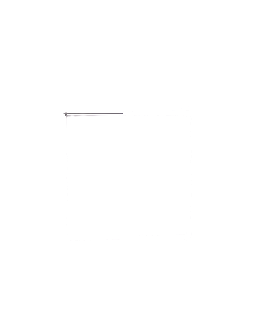
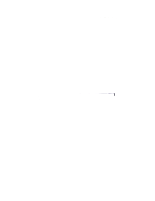
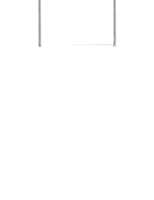
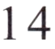
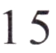
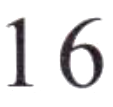

第二部分Part IIЧасть II
第14—16题： 匹配句子。Questions 14–16: Match the sentences.Вопросы 14–16: Соедините предложения.
A在家里。
B我女朋友。
C一只小猫。
D好的， 谢谢！
Nǐ hē shuǐ ma?例如： 你喝水吗？ D
Would you like some water?Хочешь воды?桌子上有什么？
你今天下午在哪儿？
你和谁在超市呢？
第三部分Part IIIЧасть III
第17—18题： 选词填空。Questions 17–18: Choose the correct word to fill in each blank.Вопросы 17–18: Выберите правильное слово, чтобы заполнить пропуск.
A2:00
B上课
C名字
Nǐ jiào shénme例如： 你叫什么 ( C )?
What is your name?Как тебя зовут?17.
064我上午在学校 ( )，我们下午去看电影吧。